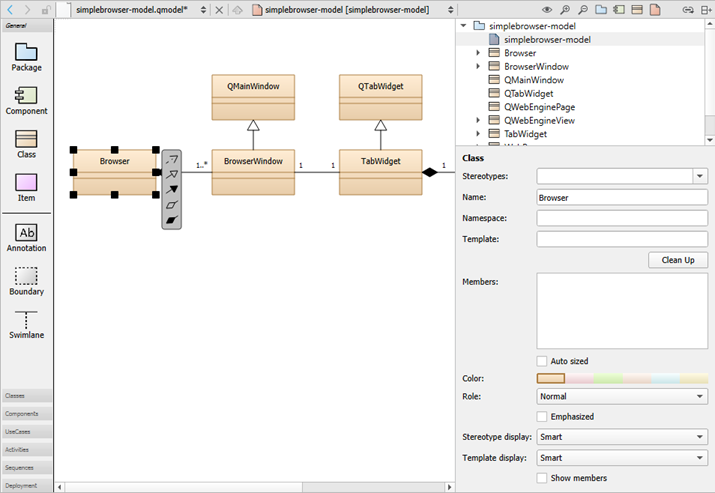

Create class diagrams
You can create UML-style models that contain class diagrams. They show classes, dependencies, inheritance, associations, aggregation, and composition to visualize a system in an object-oriented way.

A class diagram in the model editor.
To create class diagrams:
- To add C++ classes to class diagrams, drag files from Projects to the editor, and select Add Class.
- In addition to the common element properties, you can specify the following properties:
- In the Template field, specify the template to use.
- In the Template display field, select the display format for the template:
- Smart displays the template as Box or Angle brackets, depending on the class properties.
- Box displays the template in a small box with a dotted border in the top right corner of the class icon.
- Angle brackets writes the template in angle brackets behind the class name using the C++ syntax.
- In the Members field, specify members for the class, as described in Specify members.
- Select Clean Up to format the contents of the Members field depending on their visibility (private, protected, public) and following the rules set for whitespace, line breaks, and so on.
- Select the Show members check box to show the members in the diagram.
To navigate from a class in a diagram to the source code, double-click the class in the editor or select Show Definition in the context menu.
Add relations
Elements in class diagrams can have the following types of relations: inheritance, association, and dependency. The end points of association relations can have the following properties: role, cardinality, navigable, and relationship.
To create self-relations, start creating a new association and press Shift to create a new sampling point while dragging the association. Create another sampling point and drag the association to the same class.
To add more points, press Shift and click a relation. To delete a point, press Ctrl and click a point.
Specify members
To specify members for the class, enter each member on a separate line using a C++ like syntax. For example, the following lines define the method m that is private, virtual, and constant:
private: virtual int m(string a) const;
You may group members:
[Geometry] QPointF position; QSizeF size;
You may add stereotypes to members:
<<setter>> setPosition(const QPointF &pos);
There are some limitations of the parser:
- Multi-line declarations work only if lines are wrapped within nested brackets:
void setSize(int width, int height);
- Preprocessor macros will not be translated. Some Qt keywords are recognized (for example Q_SLOT).
- Function pointer declarations are interpreted as methods.
throw()andnoexpect()specifiers are not ignored but will make the declaration a method.
See also Create component diagrams, Create package diagrams, Create UML-style models, and Model Editor.